1.1 Decreasing Longitudinal Spacing
User Task Input
“Decrease the longitudinal spacing.”
Seven demonstrations cover spacing adjustment, ambulance yielding, obstacle avoidance, speech-driven structure switching, and image-guided shape transformation. All videos below are shown at real-time speed.
Seven CAVs adapt to five task categories while traveling at a desired speed of 20 m/s. Ten conditions, each repeated ten times independently with the same initial experience memory.
The initial interlaced formation has a 2–3–2 distribution across Lanes 1–3, a 30 m within-lane following distance, and 4 m-wide lanes. Accident cases provide a fourth lane; all other cases use three lanes. These repeated tests use the Gemini 3.1 Pro API with Low reasoning effort, temperature 1.0, and top-p 0.95.
| Task / road | Condition 1 | Condition 2 |
|---|---|---|
| Lane unavailability3 lanes · text | “Lane 1 will become unavailable.” | “Lane 3 will become unavailable.” |
| Accident closure4 lanes · text | “There is an accident in Lane 1!” | “There is an accident in Lane 2!” |
| Spacing adjustment3 lanes · text | “Increase the longitudinal spacing to 45 m.” | “Decrease the longitudinal spacing to 30 m.” |
| Structure switching3 lanes · speech | “Change the interlaced formation to a parallel formation.” | “For this parallel shape, move the single vehicle to the rear instead of the front.” |
| Shape transformation3 lanes · text + image, then text | “Change the formation shape to match desired_shape.jpg in the current directory while keeping the vehicles on both sides fixed.” | “For the new circle shape, use the three middle vehicles as the radius reference instead of the vehicles on both sides.” |
Speech inputs are prerecorded WAV files; the image input is an actual picture of a black circle. “Single vehicle to rear” moves the lone vehicle at the front of the parallel formation to its rear. The second circular-shape condition changes the radius reference to the three middle vehicles.
Lane-unavailability and accident conditions start independently from the initial formation. The other task pairs run sequentially: condition 2 is dispatched after condition 1 converges, while the vehicles continue driving. This gives 70 simulation runs and 100 task instances. Each condition is repeated ten times independently with the same initial experience memory; experience is not accumulated across repetitions.
Generation success means the initial response passes explicit format and formation-feasibility checks; invalid outputs fail these checks. Optimal outputs prioritize feasible whole-formation translation over reconfiguration and otherwise minimize the number of lane changes. When sufficient usable lanes exist, the prompt favors translating the formation while satisfying the task and environmental constraints. Thus, moving all seven CAVs from Lanes 1–3 to Lanes 2–4 is optimal under this priority when an accident closes Lane 1. Lane changes count actual lane-boundary crossings across all seven vehicles, with hysteresis to avoid counting boundary jitter.
Generation time spans the API request to receipt of the complete response. Completion time runs from formation dispatch until the root-mean-square slot-position error first falls below 0.5 m, with a 90 s observation limit.
The root-mean-square slot-position error measures distance to assigned target positions after removing common longitudinal translation, while retaining lateral errors:
Here, N = 7; (xᵢ, yᵢ) and (xᵢ*, yᵢ*) are actual and assigned target positions in meters. Unlike a pairwise-distance formation-shape metric, this measure detects whether the formation has reached its target lanes.
Generation and execution measurements are reported separately. Generation results characterize the MLLM outputs; execution results characterize realization of the dispatched target formations.
| Condition | Generation success | Invalid outputs | Optimal outputs | Completed | Generation time (s) | Completion time (s) | Lane changes |
|---|---|---|---|---|---|---|---|
| Lane 1 unavailable | 10/10 | 0/10 | 9/10 | 10/10 | 14.31 ± 2.19 | 5.52 ± 1.59 | 3–4 |
| Lane 3 unavailable | 10/10 | 0/10 | 8/10 | 10/10 | 15.18 ± 2.08 | 5.79 ± 1.72 | 3–4 |
| Accident: Lane 1 | 10/10 | 0/10 | 10/10 | 10/10 | 11.29 ± 1.82 | 1.76 ± 0.08 | 7 |
| Accident: Lane 2 | 10/10 | 0/10 | 3/10 | 10/10 | 19.96 ± 5.15 | 1.90 ± 0.21 | 5–6 |
| Increase spacing | 10/10 | 0/10 | 10/10 | 10/10 | 13.39 ± 3.24 | 5.12 ± 0.37 | 0 |
| Decrease spacing | 10/10 | 0/10 | 10/10 | 10/10 | 12.79 ± 1.70 | 4.18 ± 0.23 | 0 |
| Interlaced to parallel | 10/10 | 0/10 | 10/10 | 10/10 | 11.07 ± 1.49 | 4.06 ± 0.36 | 0 |
| Single vehicle to rear | 10/10 | 0/10 | 10/10 | 10/10 | 15.18 ± 1.51 | 8.71 ± 0.53 | 0 |
| Circle: sides fixed | 10/10 | 0/10 | 10/10 | 10/10 | 24.54 ± 5.32 | 2.38 ± 0.13 | 0 |
| Circle: middle reference | 10/10 | 0/10 | 10/10 | 10/10 | 17.12 ± 2.38 | 4.39 ± 0.21 | 0 |
All recorded generations pass validation, and all evaluated executions reach the completion threshold. Mean generation times span 11.07–24.54 s; mean completion times span 1.76–8.71 s.
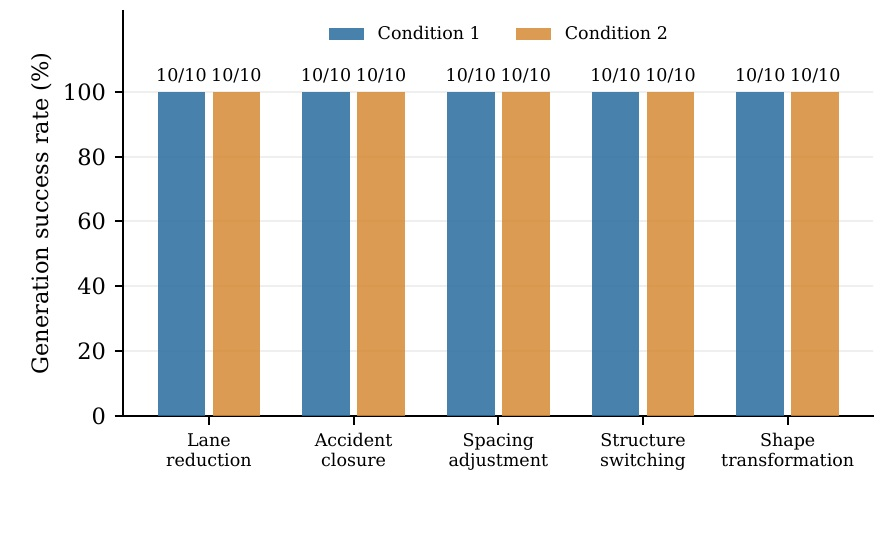
Click to enlarge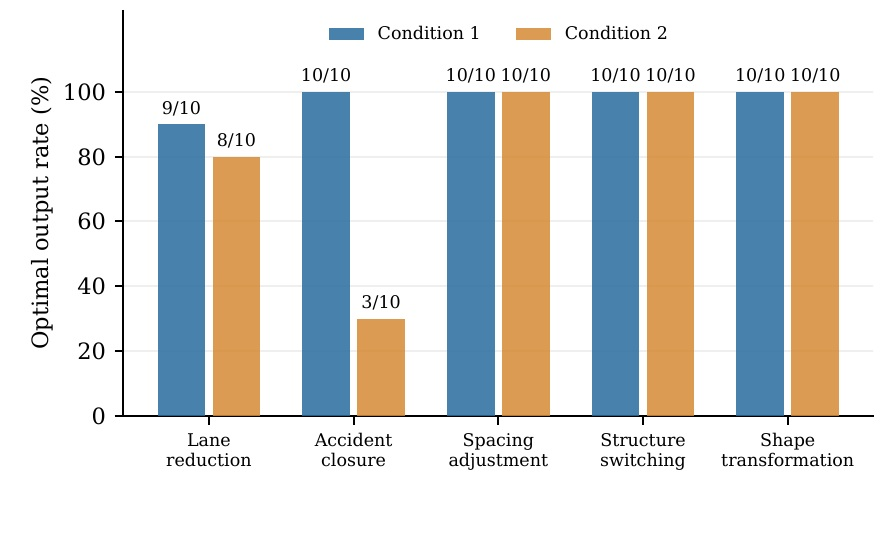
Click to enlarge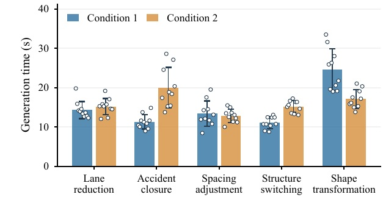
Click to enlarge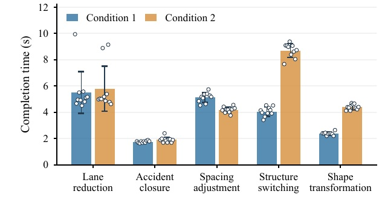
Click to enlargeThe slower lane-reduction trials correspond exactly to non-optimal outputs: one trial in condition 1 and two in condition 2 require four lane changes instead of three. They take 8.89–9.94 s, compared with 4.50–5.58 s for optimal outputs. For the Lane 2 accident, seven non-optimal outputs require six lane changes and take 1.84–2.40 s; three optimal outputs require five and take about 1.69 s.
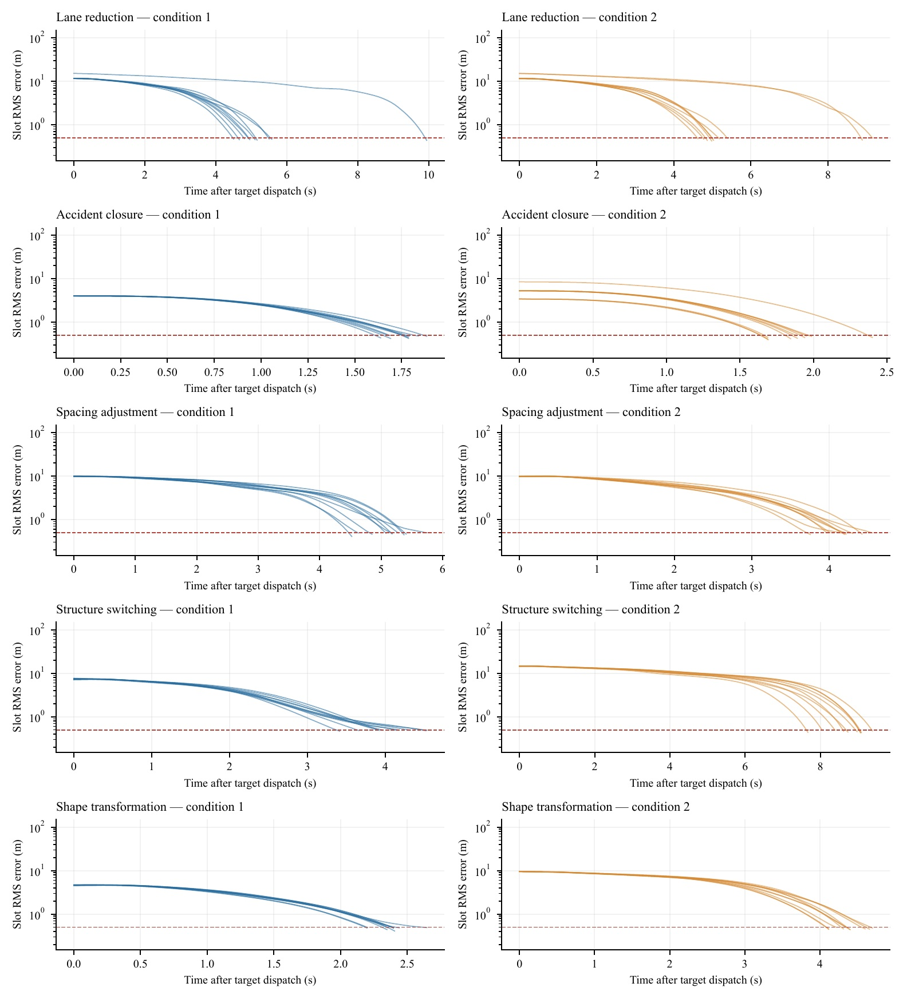
Click to enlargeTogether, these results demonstrate GRF-TAFC's on-the-fly adaptation to different instructions and road configurations.
We examine vehicle speeds, inter-vehicle spacings, and formation maintenance during target switching and recovery from perturbed initial states. A 70-run parameter study tests how execution changes with desired speed and spacing.
Switching: seven CAVs initially occupy Lanes 1–3 in a 2–3–2 interlaced formation at a desired speed of 20 m/s and within-lane spacing of 30 m. Lane 1 becomes unavailable. The previously generated optimal target formation allocates four vehicles to Lane 2 and three to Lane 3, requiring three lane changes:
\(\mathcal{S}_{\mathrm{switch}}=[(0,2),(2,2),(4,2),(6,2),(1,3),(3,3),(5,3)].\)
Recovery: the same fleet starts with longitudinal velocity offsets up to ±2 m/s and lateral offsets up to ±0.6 m. Initial within-lane spacings are 21, 42, 24, and 24 m instead of 30 m. The desired interlaced formation stays unchanged:
\(\mathcal{S}_{\mathrm{recovery}}=[(1,1),(3,1),(0,2),(2,2),(4,2),(1,3),(3,3)].\)
In both lists, the first coordinate is scaled by half the desired within-lane spacing and the second specifies the lane; lane width is 4 m. The representative switching run completes in 4.85 s / 97.69 m, and recovery in 2.84 s / 45.93 m. Distances are the mean longitudinal advances of the seven vehicles up to completion.
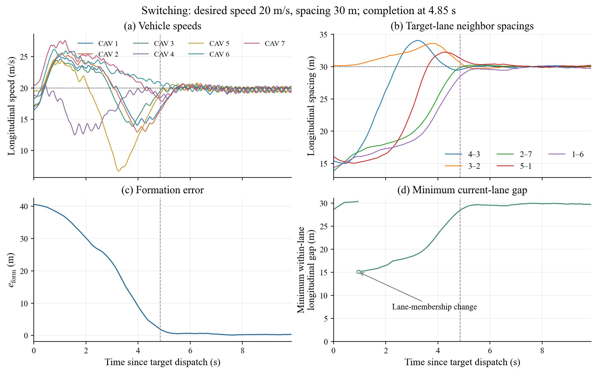
Click to enlarge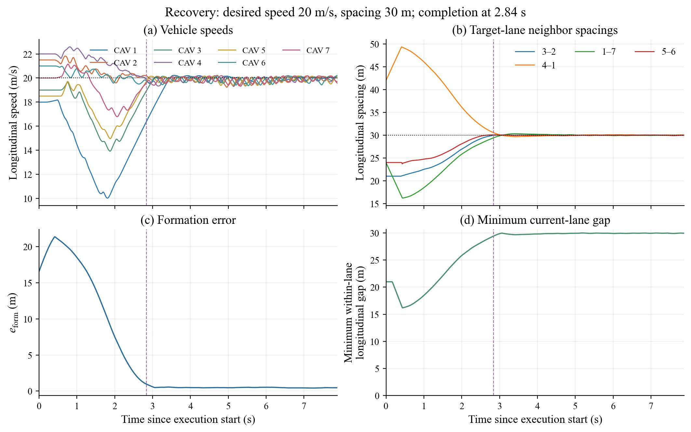
Click to enlargeFormation switching: 34 of 35 runs reach the completion threshold. The case at 15 m/s and 45 m does not converge within the observation limit and is marked N/C. Completed runs take 2.33–12.63 s and 35.34–237.99 m. Although responses are not strictly monotonic under fixed parameters, larger spacing generally requires more switching time, while higher speed generally increases the distance traveled during switching.
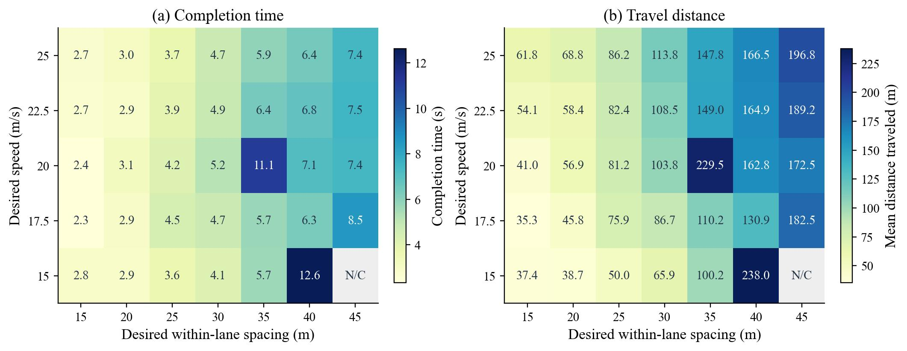
Click to enlargeFormation recovery: all 35 runs reach the completion threshold, taking 1.67–16.76 s and 22.29–276.95 m. Speed and spacing are coupled, so no clear monotonic trend emerges across the entire grid; overall, the recovery distance tends to increase with speed and spacing.
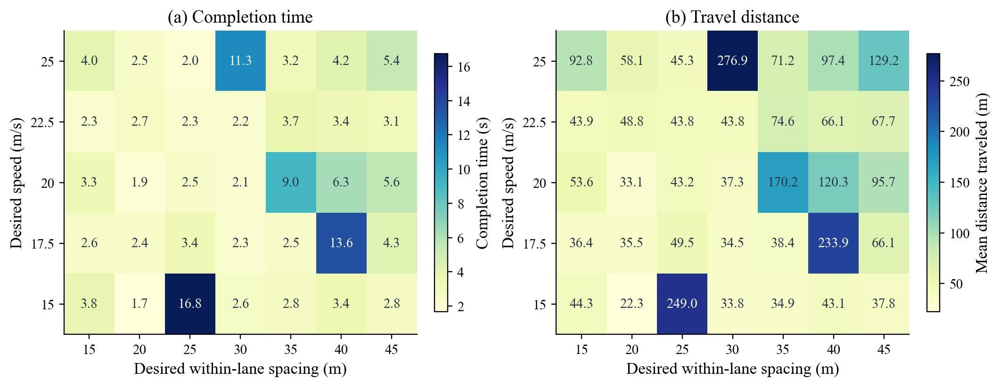
Click to enlargeThe heatmaps report the minimum Euclidean distance between vehicle centers over all pairs and the full observed execution interval, including five seconds after completion. Both longitudinal and lateral separations are included, without filtering by lane membership. This differs from the within-lane longitudinal gaps shown in the trajectory plots above.
For switching, minimum separation generally decreases with increasing speed, indicating increased collision risk and motivating greater relative emphasis on collision avoidance at higher speeds. The original low-speed, large-spacing anomalies also illustrate the importance of scenario-dependent weight selection: in the manuscript formulation, combining the formation cost in Eq. (7) with the cubic aggregation in Eq. (6) gives a twelfth-order dependence on a uniform spatial scale. With fixed weights, this strong scale sensitivity can give the formation term excessive influence as spacing increases. These results motivate adapting the optimization weights to the operating scenario rather than using one setting throughout.
After compensating for formation-cost scale amplification, the first repeated switching runs at 45 m spacing and speeds of 15 and 17.5 m/s yield minimum distances of 4.10 and 4.00 m, respectively. These results are marked with asterisks in the figure.
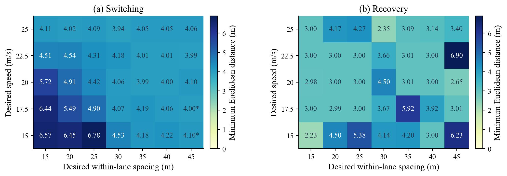
Click to enlargeThe representative trajectories show switching, recovery, and subsequent maintenance. The full grid shows how completion time, traveled distance, and inter-vehicle separation vary with desired speed and spacing.
We compare repeated formation generation with and without reflection, then evaluate whether experience from one ambulance-yielding scenario can guide generation in a different but similar scenario.
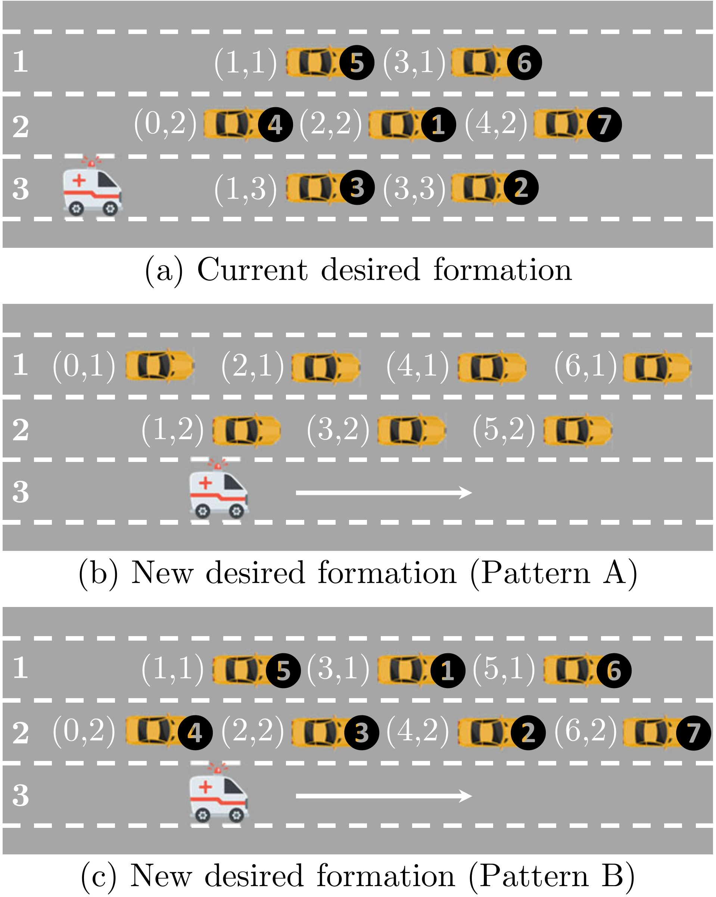
Click to enlarge Click to enlarge
Click to enlarge
In the original scenario, Kimi K3 and Claude Sonnet 5 initially generate Pattern A, requiring four lane changes. Both retain this non-optimal formation in a second attempt without reflection. With reflection enabled after the first attempt, both generate the optimal Pattern B, requiring three lane changes. This comparison supports reflection's contribution to formation quality.
The original formation has a 2–3–2 distribution across three lanes. The transfer scenario increases the fleet to ten CAVs, initially distributed as 2–3–2–3 across four lanes, and moves the approaching ambulance from the lowermost to the uppermost lane. Candidate distributions over the remaining Lanes 2–4 include 4–3–3 (Pattern D), 3–4–3 (Pattern E), and 3–3–4. They share the same task of clearing the ambulance's lane but entail different numbers of lane changes.
Using experience from the original scenario, both Kimi K3 and Claude Sonnet 5 generate Pattern D (4–3–3), requiring the minimum of three lane changes. Their generation times are 41.36 s and 35.59 s, respectively. An excerpt from the generated reasoning explicitly identifies the retrieved experience:
Experience Memory (Lane-Change Minimization): Similar to the retrieved experience of reducing three lanes to two for a 2-3-2 distribution, the strategy here is to allocate the CAVs in a manner that closely mirrors the existing lane-wise distribution to strictly minimize the total number of lane changes.
Key: Reduction of available lanes from three to two for a seven-CAV formation with a 2–3–2 lane-wise distribution.
Value: Place four target positions in Lane 2 and three in Lane 1, rather than the reverse, because this reduces the lane-change count from four to three.
These outputs provide evidence that the stored experience conveys a reusable decision principle and can transfer to this related scenario despite changes in fleet size, road configuration, and ambulance approach lane.
| MLLM and configuration | Generated formation | Lane-change count | Generation time (s) |
|---|---|---|---|
| Original scenario: 7 CAVs, ambulance in Lane 3 | |||
| Grok 4.6 | Pattern Boptimal | 3 | 44.75 |
| Kimi K3 | Pattern Anon-optimal | 4 | 24.14 |
| Kimi K3(second turn, without reflection) | Pattern Anon-optimal | 4 | 12.05 |
| Kimi K3(second turn, with reflection) | Pattern Boptimal | 3 | 15.45 |
| Claude Sonnet 5 | Pattern Anon-optimal | 4 | 14.09 |
| Claude Sonnet 5(second turn, without reflection) | Pattern Anon-optimal | 4 | 6.02 |
| Claude Sonnet 5(second turn, with reflection) | Pattern Boptimal | 3 | 7.97 |
| DeepSeek V4 Pro | Pattern Boptimal | 3 | 128.85 |
| Qwen3.8-Max | Pattern Boptimal | 3 | 41.62 |
| GPT-5.6 Sol | Pattern Boptimal | 3 | 16.48 |
| Gemini 3.1 Pro(without tools) | Pattern Cinfeasible | / | 50.72 |
| Gemini 3.1 Pro(without knowledge) | Pattern Boptimal | 3 | 32.04 |
| Gemini 3.1 Pro | Pattern Boptimal | 3 | 36.77 |
| Transfer scenario: 10 CAVs, ambulance in Lane 1 | |||
| Kimi K3(transfer) | Pattern Doptimal | 3 | 41.36 |
| Claude Sonnet 5(transfer) | Pattern Doptimal | 3 | 35.59 |
Pattern C places vehicles in Lanes 2–3 and is infeasible because it fails to clear Lane 3 for the ambulance in the original scenario. Pattern D is the optimal 4–3–3 formation in the transfer scenario shown above. A non-optimal formation is not necessarily infeasible. “/” indicates that no lane-change count is reported for the infeasible output.


Multimodal input. The prompt composer sends the task prompt together with recorded WAV audio or the specified image to the MLLM. In the structure-switching demonstration, the operator presses R to start recording and types T followed by Enter to stop recording. The shape demonstration supplies an image of a black circle alongside the text request.
Validation and fallback. Prompt-guided self-checking helps the MLLM refine candidates. After generation, a separate rule-based parser checks output tags, the vehicle count, finite two-dimensional coordinates, usable road regions and lanes, target separation, and obstacle clearance. Relative longitudinal coordinates are scaled by half the desired within-lane following distance. Rejected outputs trigger regeneration; after three consecutive invalid outputs, a rule-based interlaced formation is generated and checked. If it remains infeasible, the system initiates a safe stop. Each CAV also has independently operating automatic emergency braking. Formation-level validation is distinct from the downstream trajectory optimizer's treatment of dynamic feasibility.
Keys describe applicable task contexts; values record formation adjustments and their rationale. The retrieval configuration uses multilingual-e5-base with query: and passage: prefixes for context queries and stored keys, respectively. Their normalized embeddings are ranked by cosine similarity, and the top three associated values are retrieved (or all available entries if fewer than three exist), without a fixed similarity cutoff. Domain knowledge takes precedence over conflicting experience. Before writing a reflection insight, similar keys are retrieved and their values checked for substantive duplication; redundant insights are not stored again.
Lead time and limitations. Normal operation requires timely task issuance, prompt MLLM responses, and reliable cloud–CAV communication. Combining the reported 36.77 s generation time with the 5.52 s formation-switching time gives an estimated 42.3 s from request to completion. At an ambulance speed of 20 m/s, this corresponds to approximately 846 m before the intended yielding location. Operators can use connected ambulance-location data to issue the task in advance. This estimate is not a worst-case latency bound: delayed generation or communication increases the required lead time and may prevent timely completion of tasks with stringent real-time requirements.
Formation control of connected and automated vehicles (CAVs) has shown great potential for improving traffic efficiency and safety. However, most existing studies focus on tracking predefined formations for fixed tasks, offering limited adaptability to changing task requirements. To address this limitation, we propose GRF-TAFC, a Grounded and Reflective Framework for Task-Adaptive Formation Choreography of CAVs. GRF-TAFC integrates context-grounded formation generation, optimization-based execution, and execution-driven reflection into a closed loop. A formation generator elicits the formation generation capabilities of pretrained MLLMs and grounds their reasoning over unstructured task inputs in real-time tool outputs, domain knowledge, and experience memory, yielding formations tailored to current task requirements while respecting environmental constraints. An execution module realizes the generated formations through polynomial-time CAV-to-target assignment and joint spatio-temporal trajectory optimization, facilitating collision avoidance and safe execution. A reflection module reasons over task context and actual execution outcomes, distilling reusable experience for iterative refinement. Real-world experiments across dynamic tasks and environments demonstrate GRF-TAFC’s effectiveness and practicality, with experimental videos available on the project website: https://dongjh20.github.io/GRF-TAFC.
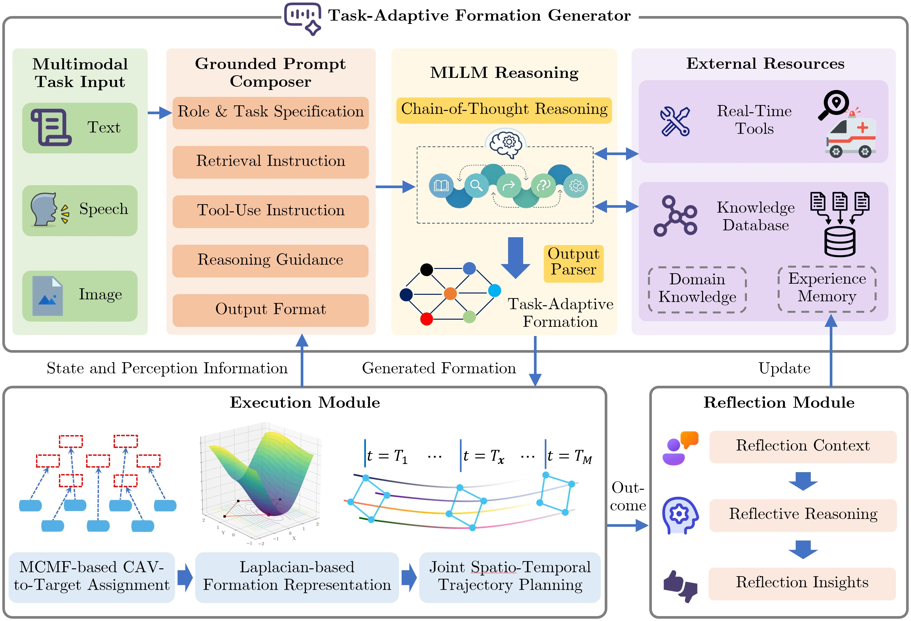